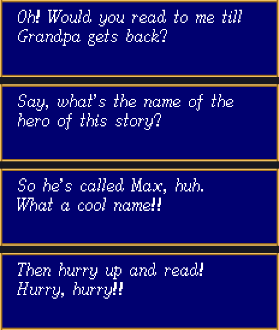
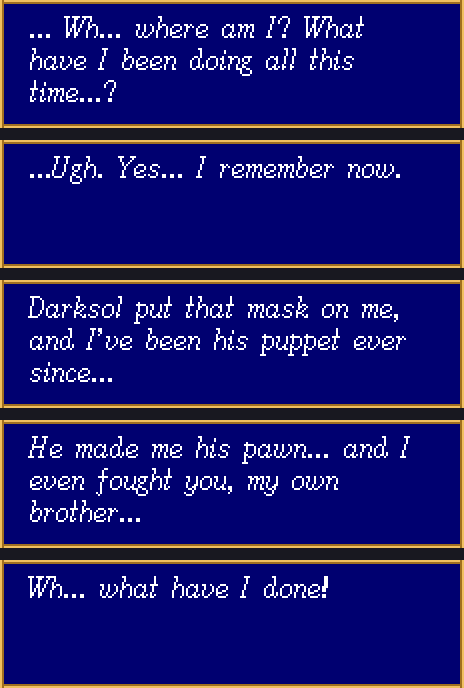
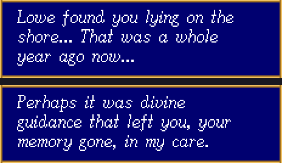
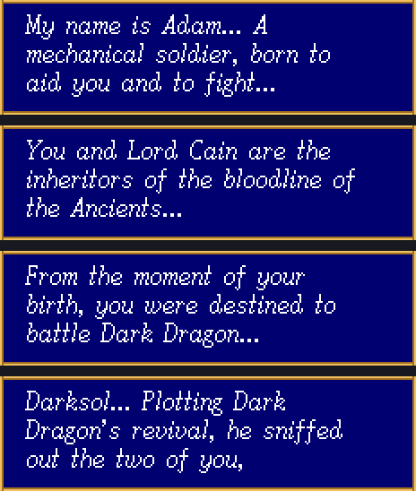
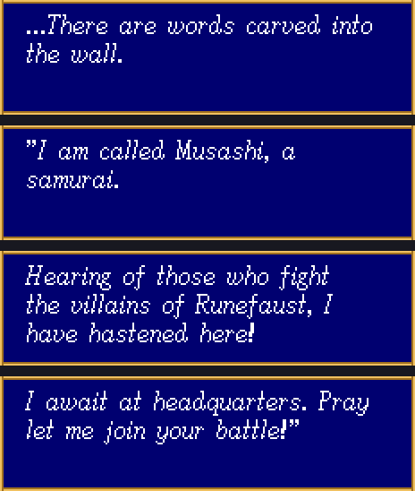

Home › Shining Force › Retranslation
Shining Force
Retranslation
The Japanese script, in English, in the US ROM · v1.0
The English Shining Force is a rewrite. The 1993 localisation kept the plot, changed the names, cut the frame story about the girl and her picture book, dropped the year Max spent on a beach with no memory, and never once says that the masked knight is his brother. I laid the two scripts side by side in The Japanese Script; this patch is the follow-up. It puts the Japanese text into the US game, in English, line for line.
Every story scene, every townsperson, every bookshelf, shop and church line has been translated fresh from the Japanese ROM. The names go back to what Camelot wrote: Zappa, Lug, Baryu, Chip, Vanguard, Yogurt, Cain, Rindorindo, Frying Pan Reef. Menus and battle messages keep the wording you know, with the new names substituted.
1,734 strings translated, 171 system strings kept, 327 empty. 2,232 in all, same as the original.

What changes
The story you were not told
The scenes that the US script rewrote are the reason this patch exists. Cain, the masked knight who kills the king of Guardiana, takes his mask off at the Prompt gate and remembers who he is:

Nova, in the headquarters at Guardiana, tells Max how he got there:

And Adam, the mechanical soldier at Metapha, explains why Darksol wanted the two brothers in the first place:

The prologue on the farm, the epilogue with the girl and her grandfather, the wall carving that recruits Musashi, the Prompt villagers with their dialect, Mishaela's snobbery, the robot Chaos stuttering in capitals: all of it is translated from what the Japanese ROM says, not from what the US ROM says.

The names
This is the "faithful" choice, so every name that the localisation changed goes back. Names that only differ in spelling (Pelle for ペイル, Diane for ディアーネ, Torasu for トーラス) stay as they are, because they are the same name. The table lists what the patch actually rewrites, in the dialogue and in the menus.
| US name | Japanese | In this patch |
|---|---|---|
| Zylo | ザッパ | Zappa |
| Luke | ラグ | Lug |
| Bleu | バリュウ | Baryu |
| Khris | チップ | Chip |
| Vankar | バンガード | Vanguard |
| Jogurt | ヨーグルト | Yogurt |
| Kane | カイン | Cain |
| Rindo | リンドリンド | Rindorindo |
| Rudo | ルドル | Rudol |
| Ring Reef | フライパンリーフ | Frying Pan Reef |
| Shell of Waral | シエル | Ciel |
| Egress | リターン | Return |
| Bolt | スパーク | Spark |
| Boost | アタック | Attack |
| Orb of Light | かがやきのたま | Shining Orb |
| Lunar Dew | つきのしずく | Moon Drop |
| Shower of Cure | めぐみのあめ | Blessed Rain |
| Power Potion | ちからのワイン | Power Wine |
| Defense Potion | まもりのミルク | Guard Milk |
| Legs of Haste | はやてのチキン | Swift Chicken |
| Turbo Pepper | いだてんピーマン | Dash Pepper |
| Bread of Life | げんきのパン | Vigor Bread |
| Shield / Speed / Mobility Ring | まもり / はやて / いだてん | Guard / Swift / Dash Ring |
| Sugoi Mizugi | すごいみずぎ | Super Swimsuit |
| Kitui Huku | きついふく | Tight Clothes |
| Teppou / Youji | てっぽう / ようじ | Musket / Tooth Pick |
| Kindan NoHako | きんだんのはこ | Taboo Box |
| Katana | きくいちもんじ | Kikuichimonji |
| Elven Arrow | ロビンのや | Robin's Arrow |
| Atlas | アトラスのおの | Atlas Axe |
| Guardian / Holy / Power Staff | まもり / せいじゃ / パワースティック | Guard Staff / Saint's Staff / Power Stick |
| Dark Dwarf, Dark Elf, Dark Priest | ドワーフ, ハンターエルフ, プリースト | Dwarf, Hunter Elf, Priest |
| Weed, Ice Worm, Minotaur | グリンゴーレム, イビルロープ, アーマーウロス | Green Golem, Evil Rope, Armor Uros |
| Artillery, Mannequin, Evil Puppet, Dire Clown | ブラスローダー, ドール, パペット, ヘルピエロ | Blast Loader, Doll, Puppet, Hell Pierrot |
| Marionette, Conch, Shellfish, Steel Claw | ミシャエラドール, ミサイルシェル, ストームローパー, プレインメタル | Mishaela Doll, Missile Shell, Storm Roper, Plain Metal |
Spell names in the magic menu are limited to six letters by the window, so Detox, Dispel, Shield, Muddle and Desoul keep their US names even though the Japanese are Antidote, Anti-Spell, Spell Wall, Illute and Soul Steal. Class abbreviations on the status screen are unchanged. Item names are two rows of eight letters each in the item window, which is why the toothpick became "Tooth Pick".
What stays
The battle messages ("Lowe attacks!", "Inflicts 12 points of damage"), the menu prompts ("Use whose item?"), the treasure-chest messages and the debug flag strings keep the US text. They say the same thing in both languages, and they are the strings whose tags the engine is fussiest about. The only edits there are the name substitutions above.
How it was made
Shining Force stores its text Huffman-compressed, one tree per preceding symbol, in nine banks of 256 strings, with a single length byte in front of each string. The US ROM is 1,572,864 bytes and its text area is full: the English of 1993 was written to fit the space, which is one of the reasons it is so much shorter than the Japanese. English that says what the Japanese says needs about forty percent more room.
So the patch expands the ROM to 2 MB and moves the script into the new space. The
decoder is copied to $180000 with its two PC-relative pointers rewritten, the
212-entry tree table and the tree data follow it, the nine text banks follow those, and
the jump at $010048 that every text call goes through is repointed at the
copy. The bank pointer table at $13E906 gets nine new addresses, the header's
ROM-end field becomes $1FFFFF, and that is every byte of the original ROM
that the script relocation touches. The item, spell and enemy name tables are rebuilt at
$1F0000 and reached through the game's own pointer block at
$0203B0, and six ally names are rewritten in place in the character table.
| Measure | US ROM | This patch |
|---|---|---|
| Compressed text | 52,970 bytes | 73,893 bytes |
| Huffman tree data | 1,446 bytes | 1,846 bytes |
| Contexts with a tree | 83 | 84 |
| ROM size | 1,572,864 | 2,097,152 |
| Patch size (IPS) | 196,818 bytes |
Two things about the text engine shaped the translation. The dialogue window is three lines of 196 pixels in a proportional font, and the engine wraps a word only when a glyph crosses the edge, so line breaks have to be placed by hand or the words split. Every translated line was re-wrapped from the width of each glyph in the ROM's font table. And each string has one length byte, so no string can compress to more than 255 bytes; the Japanese speech at the spring in Metapha, eleven pages long, had to be tightened twice to get under it.
The other trap was alignment. The US script is not the Japanese one with the text swapped: the localisers inserted two strings, at 0621 and 07A9, so from there on the Japanese line for any US slot is one, then two, indices behind. Translate by index and the last third of the game would have every townsperson saying the previous townsperson's line. The mapping was worked out by matching names and tag patterns and then checked by hand at every place it shifts.
The translation itself was done in twelve batches against a shared glossary of names, places and terms, with the US line beside the Japanese for context only. Each batch was then checked mechanically: same placeholders as the Japanese ([Hero], [Name], [Item], [Num]), same number of timed pauses in cutscenes, every page short enough for the window, every character present in the font. A handful of pages that wrapped to four lines were rewritten by hand, and the opening prologue was cut to the two lines its box allows.
Testing status
The patched ROM has been verified by re-decoding every one of the 2,232 strings out of the finished image with an independent decoder, on the vanilla ROM and on a ROM already carrying Turn Queue & Tactics v16. It has not yet had a full playthrough in an emulator. If a line looks wrong, wraps oddly, or a menu shows something strange, quote the text and where you saw it on the contact page and it will be fixed in the next version. The full script is published above so anyone can read it without playing.
Applying the patch
- Get an IPS patcher: Flips (Floating IPS) on Windows, macOS or Linux, or Lunar IPS. Most emulator front-ends can do it too.
- Point it at
ShiningForce_Retranslation_v1.0.ipsand at yourShining Force (USA).bin, 1,572,864 bytes, MD54b4acbe75ff7aaeb534ab78ed95910d1. Let it write a new file. The output is 2,097,152 bytes; that is expected. - Want both mods? Apply Turn Queue & Tactics v16 first, then this patch on the result. The two never write the same bytes, so the order only matters for the header checksum, which the game does not check.
- Load the result in any Mega Drive emulator or on a flash cart that accepts 2 MB images. Existing saves keep working; the save format is untouched.
Questions
Is this a translation or a "faithful" translation?
Both. The aim was natural English that says what the Japanese says, in the register the Japanese uses: Nova calls the hero "Sir", the Prompt villagers speak like villagers, Mishaela talks down to everyone. Nothing was added, and nothing that the Japanese script says was left out to fit the window; where a page was too long it became two pages.
Why keep Detox and Dispel when the Japanese says Antidote and Anti-Spell?
The magic window draws spell names in a six-tile field. The Japanese names are six kana, the US names six letters, and "Antidote" is eight. Attack, Spark and Return fit, so those changed.
Does it work on real hardware?
It should: the ROM is a plain 2 MB image with the header size field updated, and Shining Force never verifies its own checksum. It has not been tried on a cartridge yet.
Will there be an Italian version?
The tooling is language-agnostic as long as the language fits the ROM's font, which has no accented letters. Italian would need a few glyphs added first. It is on the list.